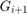

Image Pyramids
In this demo, we show how to use the functions cv.pyrUp and cv.pyrDown to downsample or upsample a given image.
Sources:
Contents
Theory
The explanation below belongs to the book Learning OpenCV by Bradski and Kaehler.
Usually we need to convert an image to a size different than its original. For this, there are two possible options:
- Upsize the image (zoom in) or
- Downsize it (zoom out).
Although there is a geometric transformation function in OpenCV that literally resize an image cv.resize, in this section we analyze first the use of Image Pyramids, which are widely applied in a huge range of vision applications.
Image Pyramid
An image pyramid is a collection of images - all arising from a single original image - that are successively downsampled until some desired stopping point is reached.
There are two common kinds of image pyramids:
- Gaussian pyramid: Used to downsample images
- Laplacian pyramid: Used to reconstruct an upsampled image from an image lower in the pyramid (with less resolution)
In this tutorial we'll use the Gaussian pyramid.
Gaussian Pyramid
Imagine the pyramid as a set of layers in which the higher the layer, the smaller the size.

Every layer is numbered from bottom to top, so layer (denoted as  is smaller than layer  ().
().
To produce layer in the Gaussian pyramid, we do the following:
- Convolve with a Gaussian kernel:
- Remove every even-numbered row and column.
You can easily notice that the resulting image will be exactly one-quarter the area of its predecessor. Iterating this process on the input image (original image) produces the entire pyramid.
The procedure above was useful to downsample an image. What if we want to make it bigger? columns filled with zeros ()
- First, upsize the image to twice the original in each dimension, wit the new even rows and
- Perform a convolution with the same kernel shown above (multiplied by 4) to approximate the values of the "missing pixels"
These two procedures (downsampling and upsampling as explained above) are implemented by the OpenCV functions cv.pyrUp and cv.pyrDown, as we will see in an example with the code below.
NOTE: When we reduce the size of an image, we are actually losing information of the image.
Code
function varargout = pyramids_demo_gui(im) % load source image if nargin < 1 src = imread(fullfile(mexopencv.root(),'test','cat.jpg')); elseif ischar(im) src = imread(im); else src = im; end % create the UI h = buildGUI(src); if nargout > 0, varargout{1} = h; end end function onType(~,e,h) %ONTYPE Event handler for key press on figure % handle keys switch e.Key case 'h' helpdlg({ 'Hot keys:' 'h - this help dialog' 'q - quit the program' 'r - reset' 'u - upsample' 'd - downsample' 'p - toggle pan (wont respond to keys while on)' 's - save current image' }); case {'q', 'escape'} % quit close(h.fig); case 'r' % reset displayImage(h, h.src); case 'u' % upsample onChange(h.btn(1), [], h); case 'd' % downsample onChange(h.btn(2), [], h); case 'p' % toggle panning set(h.btn(3), 'Value',1); onPan([], [], h); case {'s', 'space'} % save image img = get(h.img, 'CData'); fname = fullfile(tempdir(), ... sprintf('out_%s.png', datestr(now(),'yyyymmddTHHMMSS'))); cv.imwrite(fname, img); disp(['Saved ' fname]); end end function onPan(~,~,h) %ONPAN Event handler for UI controls if mexopencv.isOctave(); %HACK: pan not implemented in Octave return; end % toggle panning on/off % we also disable/restore keypress callback (not permitted while panning) if logical(get(h.btn(3), 'Value')) set(h.fig, 'WindowKeyPressFcn',''); set(h.pan, 'Enable','on'); else set(h.pan, 'Enable','off'); set(h.fig, 'WindowKeyPressFcn',{@onType,h}); end end function onChange(o,~,h) %ONCHANGE Event handler for UI controls % current image img = get(h.img, 'CData'); % perform upsampling/downsampling sz = [size(img,2) size(img,1)]; switch o case h.btn(1) img = cv.pyrUp(img, 'DstSize',sz*2); case h.btn(2) img = cv.pyrDown(img, 'DstSize',round(sz/2)); end % show result displayImage(h, img); end function displayImage(h, img) %DISPLAYIMAGE Update image set(h.img, 'CData',img); set(h.txt, 'String',sprintf('(%dx%d)', size(img,2), size(img,1))); drawnow; end function h = buildGUI(img) %BUILDGUI Creates the UI % parameters sz = size(img); sz(2) = max(sz(2), 280); % minimum figure width % build the user interface (no resizing to keep it simple) h = struct(); h.src = img; h.fig = figure('Name','Pyramids Demo', ... 'NumberTitle','off', 'Menubar','none', 'Resize','off', ... 'Position',[200 200 sz(2) sz(1)+29]); if ~mexopencv.isOctave() %HACK: not implemented in Octave movegui(h.fig, 'center'); end h.ax = axes('Parent',h.fig, 'Units','pixels', 'Position',[1 30 sz(2) sz(1)]); if ~mexopencv.isOctave() h.img = imshow(img, 'Parent',h.ax); else %HACK: https://savannah.gnu.org/bugs/index.php?45473 axes(h.ax); h.img = imshow(img); end h.btn(1) = uicontrol('Parent',h.fig, 'Style','pushbutton', ... 'Position',[5 5 60 20], 'String','Up'); h.btn(2) = uicontrol('Parent',h.fig, 'Style','pushbutton', ... 'Position',[70 5 60 20], 'String','Down'); h.btn(3) = uicontrol('Parent',h.fig, 'Style','togglebutton', ... 'Position',[135 5 60 20], 'String','Pan'); h.txt = uicontrol('Parent',h.fig, 'Style','text', 'FontSize',8, ... 'Position',[200 5 80 20], 'HorizontalAlignment','Left', ... 'String',sprintf('(%dx%d)', size(img,2), size(img,1))); if ~mexopencv.isOctave(); %HACK: pan not implemented in Octave h.pan = pan(h.fig); end % hook event handlers opts = {'Interruptible','off', 'BusyAction','cancel'}; set(h.fig, 'WindowKeyPressFcn',{@onType,h}, opts{:}); set(h.btn(1:2), 'Callback',{@onChange,h}, opts{:}); set(h.btn(3), 'Callback',{@onPan,h}, opts{:}) end